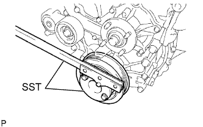

ЗАДНИЙ САЛЬНИК КОЛЕНЧАТОГО ВАЛА > УСТАНОВКА |
| 1. УСТАНОВИТЕ ЗАДНИЙ САЛЬНИК КОЛЕНЧАТОГО ВАЛА |
Нанесите на рабочую кромку нового сальника небольшое количество универсальной консистентной смазки.
С помощью специального инструмента и молотка запрессуйте сальник так, чтобы его поверхность оказалась заподлицо с краем стопора сальника.
| 2. УСТАНОВИТЕ ВЕДУЩИЙ ДИСК И КОРОННУЮ ШЕСТЕРНЮ В СБОРЕ (для моделей с автоматической трансмиссией) |
|  |
Зафиксируйте коленчатый вал с помощью SST.
 |
Установите переднюю распорную втулку, ведущий диск и заднюю распорную втулку на коленчатый вал.
| *1 | Передняя распорная втулка ведущего диска |
| *2 | Ведущий диск и коронная шестерня |
| *3 | Задняя распорная втулка ведущего диска |
 | Сторона трансмиссии |
Очистите болты и болтовые отверстия.
Нанесите герметик на 2-3 концевых витка резьбы каждого из 10 болтов.
 |
В несколько этапов вверните и равномерно затяните 10 болтов. Последовательность затяжки показана на рисунке.
| 3. УСТАНОВИТЕ МАХОВИК В СБОРЕ (для моделей с механической трансмиссией) |
Зафиксируйте коленчатый вал с помощью SST.
Очистите болты и болтовые отверстия.
Нанесите герметик на 2-3 концевых витка резьбы каждого из 10 болтов.
 |
В несколько этапов вверните и равномерно затяните 10 болтов. Последовательность затяжки показана на рисунке.
Отметьте верхнюю сторону болтов краской.
Затяните 10 болтов на 90° в той же последовательности.
Убедитесь, что метки повернуты на 90° относительно верхнего положения.
| 4. УСТАНОВИТЕ ВЕДОМЫЙ ДИСК СЦЕПЛЕНИЯ В СБОРЕ (для моделей с механической трансмиссией) |
 |
Вставьте SST в ведомый диск сцепления. Затем вставьте SST (вместе с ведомым диском сцепления) в маховик, чтобы установить ведомый диск сцепления.
| Со стороны маховика |
| 5. УСТАНОВИТЕ КОЖУХ СЦЕПЛЕНИЯ В СБОРЕ (для моделей с механической трансмиссией) |
 |
Совместите сборочные метки кожуха сцепления и маховика.
| *a | Метка |
Равномерно затяните 6 болтов в последовательности, показанной на рисунке, начиная с болта, который расположен сверху около штифта.
| 6. УСТАНОВИТЕ МЕХАНИЧЕСКУЮ ТРАНСМИССИЮ В СБОРЕ (для моделей с механической трансмиссией) |
Установите механическую трансмиссию в блоке с главной передачей в сборе (Нажмите здесь).
| 7. УСТАНОВИТЕ АВТОМАТИЧЕСКУЮ ТРАНСМИССИЮ В СБОРЕ (для моделей с автоматической трансмиссией) |
Снимите автоматическую трансмиссию в сборе (Нажмите здесь).